These are native Studio captures unless identified as a presentation fixture. Phone captures are Studio emulation. None establish physical-device performance or live multiplayer.
Before — user-supplied reference:
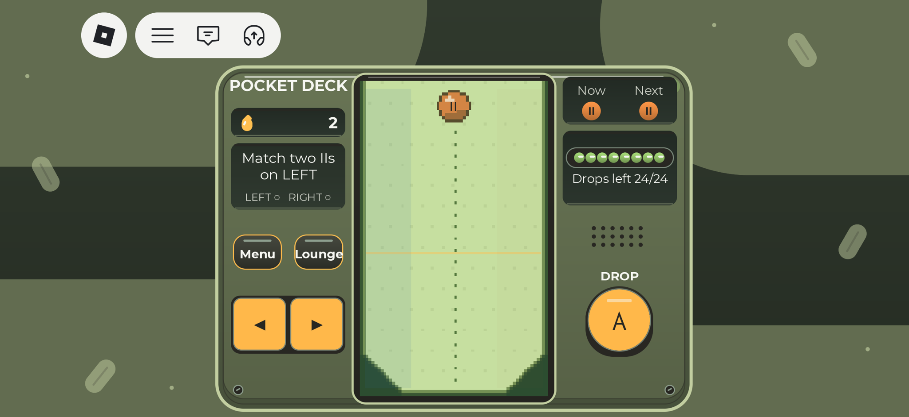
After — actual final Bank round,10drops accepted:
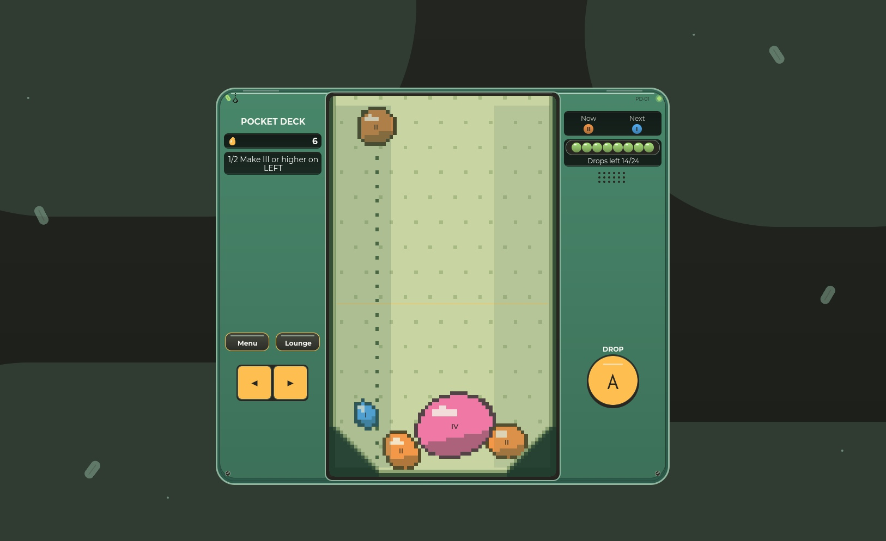
Full phone-emulator field with Medium text:
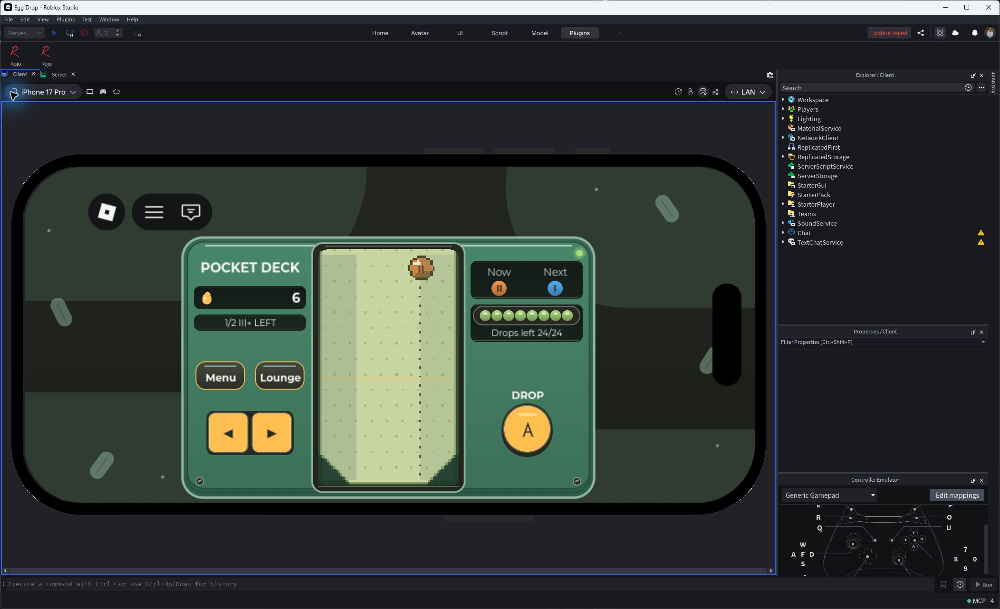
Before — user-supplied reference:
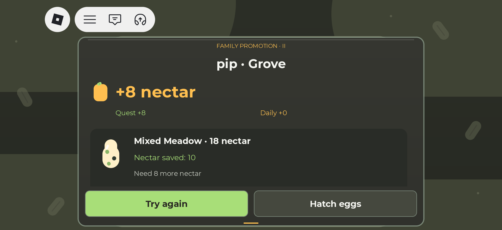
After — actual24-drop Bank,660points, Saved+12, after the count-up settled:
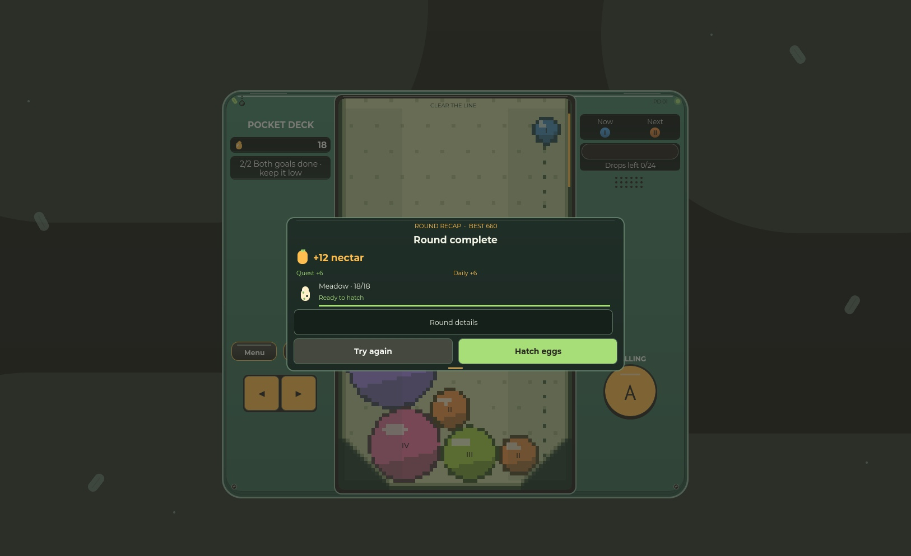
Actual18-nectar Meadow purchase, Wick result; same result survived X/reopen:
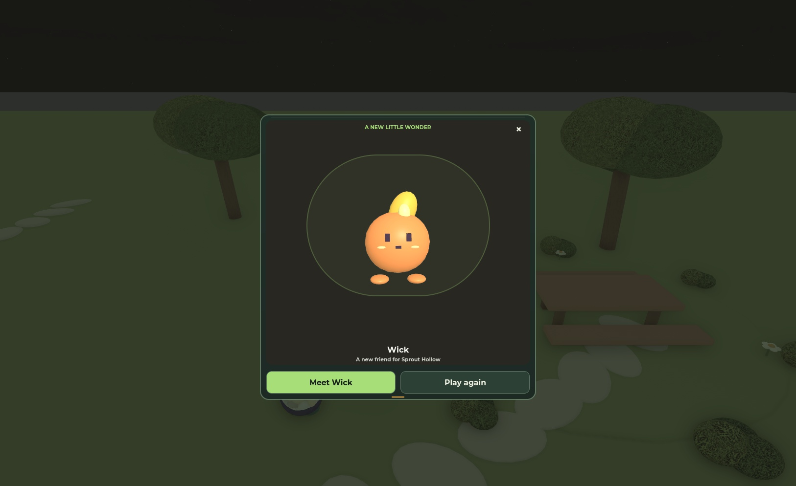
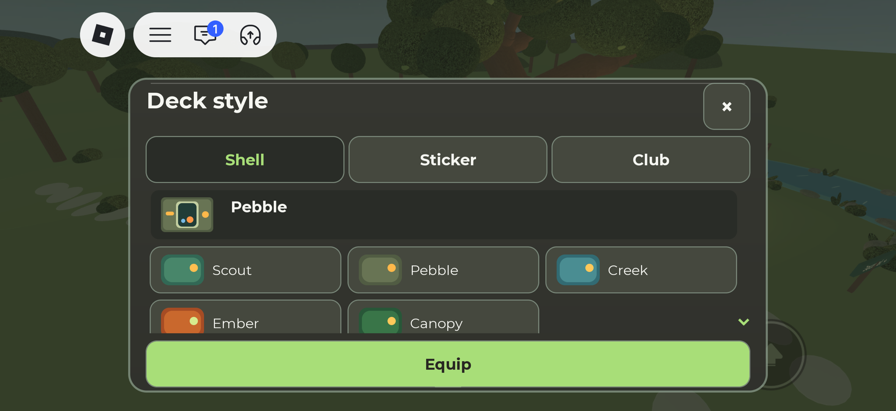
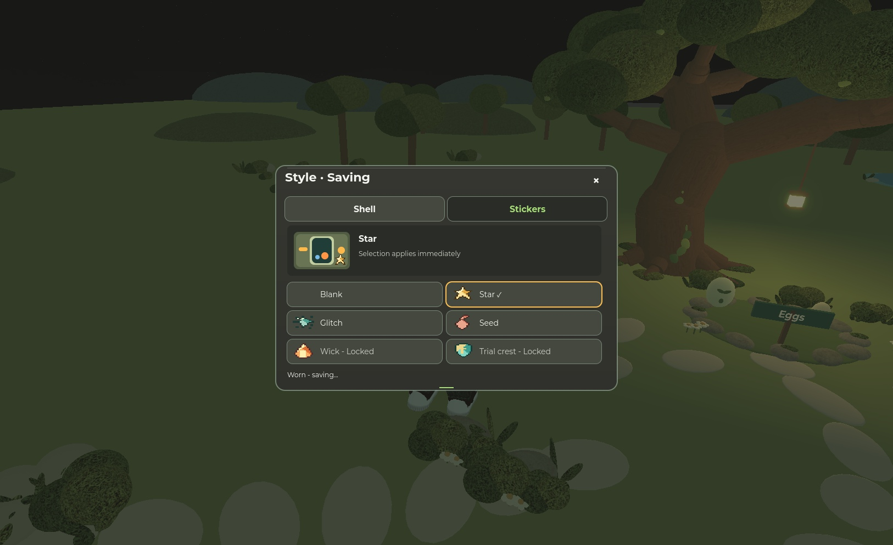
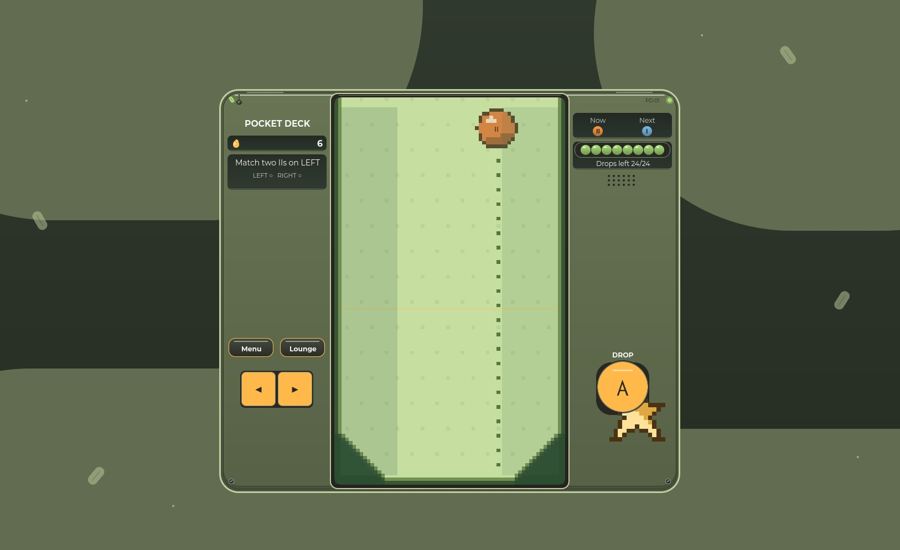
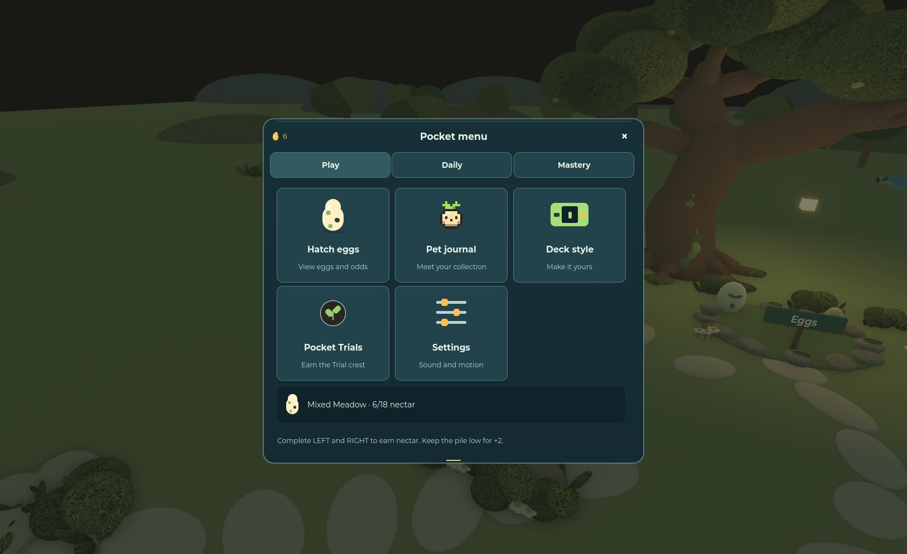
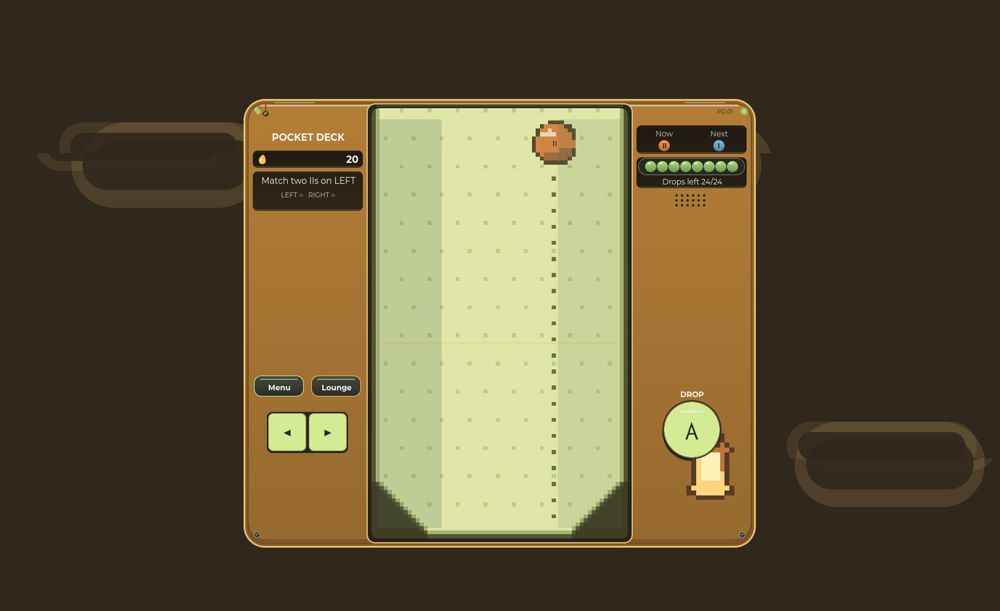
The same final production world under client-only fixed noon/night clock samples; server daily reward time was not changed:
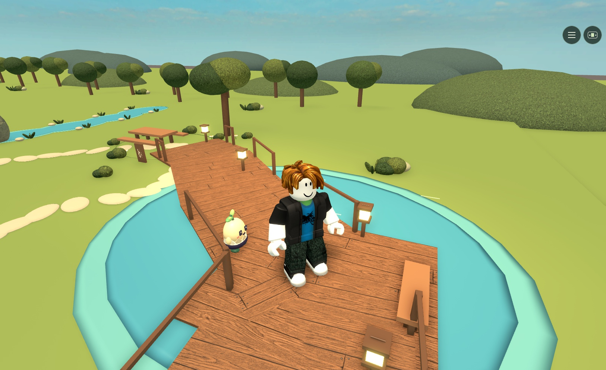
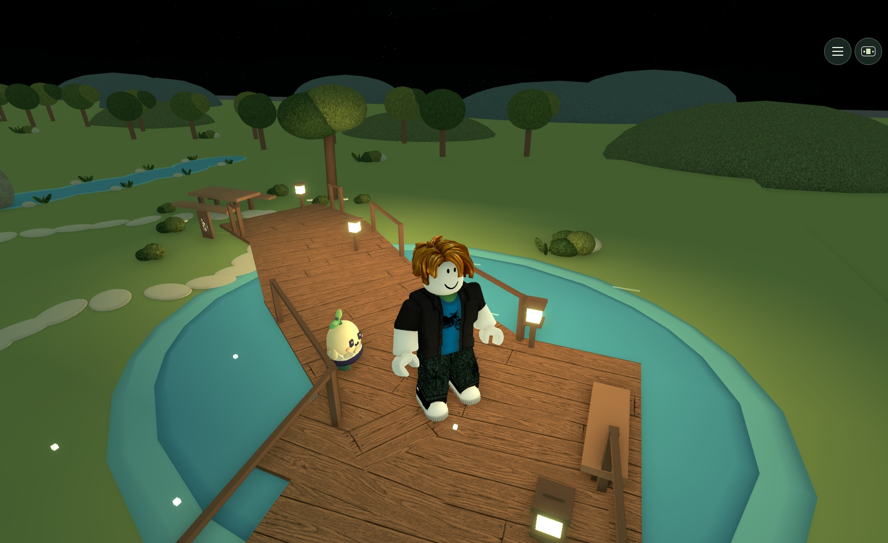
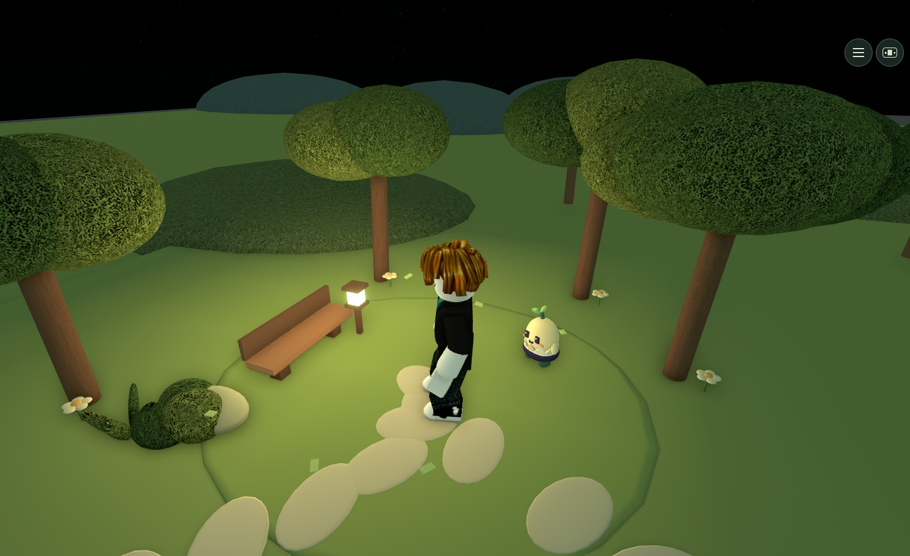
Frozen previous-source night baseline, seven client-only staged rigs:
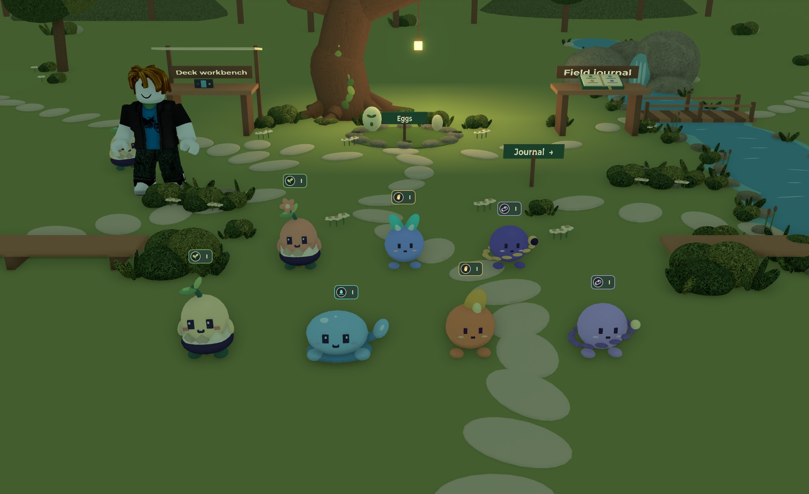
Final production rigs, same seven species under fixed-night lighting. Eyes/cheeks remain visible while bodies keep world lighting; these are not seven owned pets or live peers:
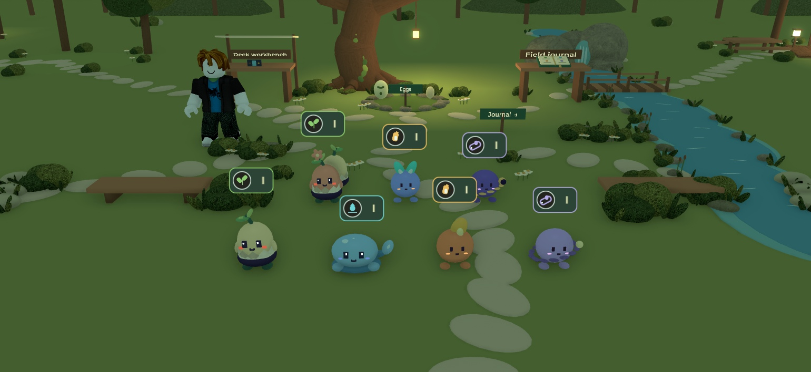
Actual held E pet focus, captured between reward glyphs:
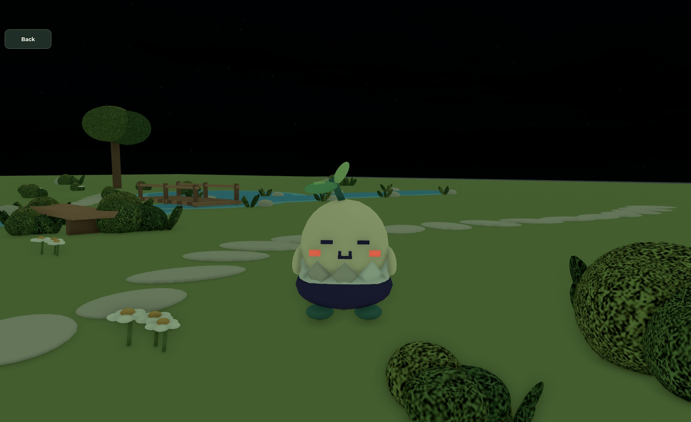